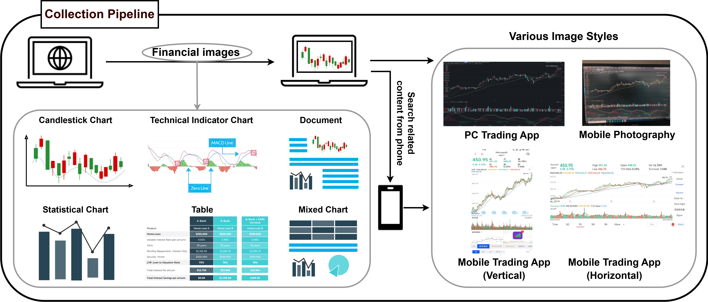
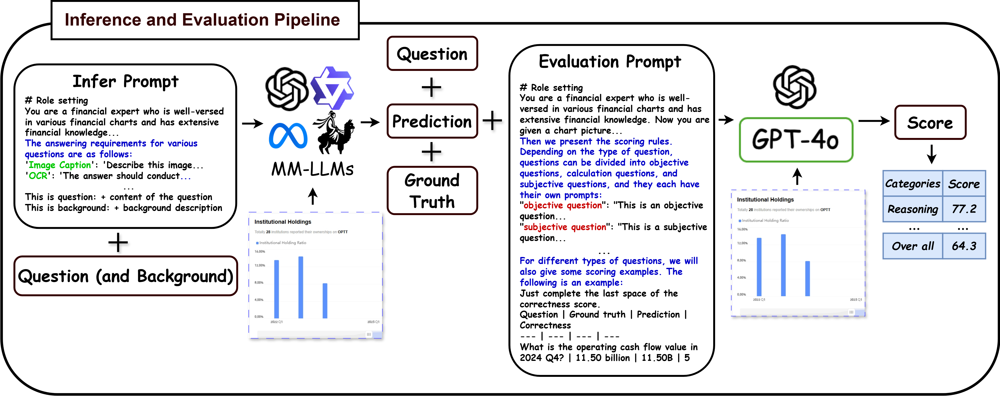
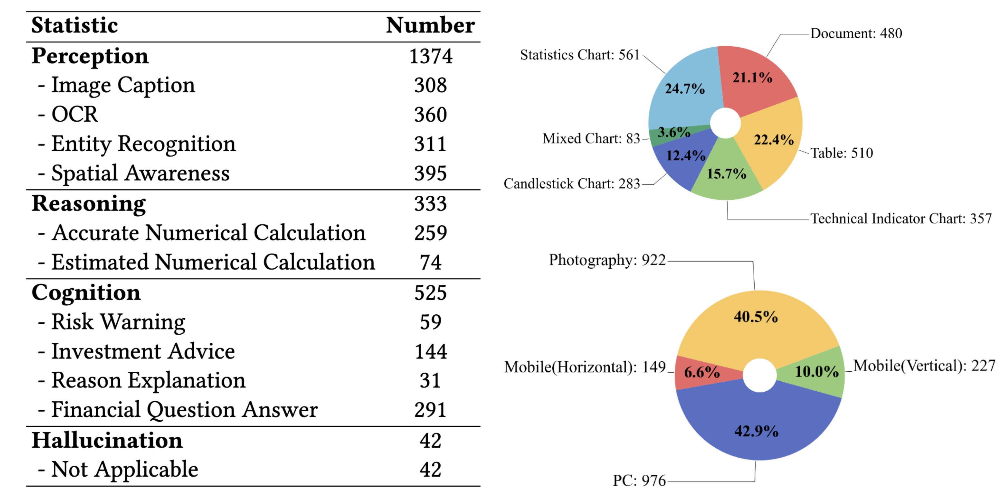
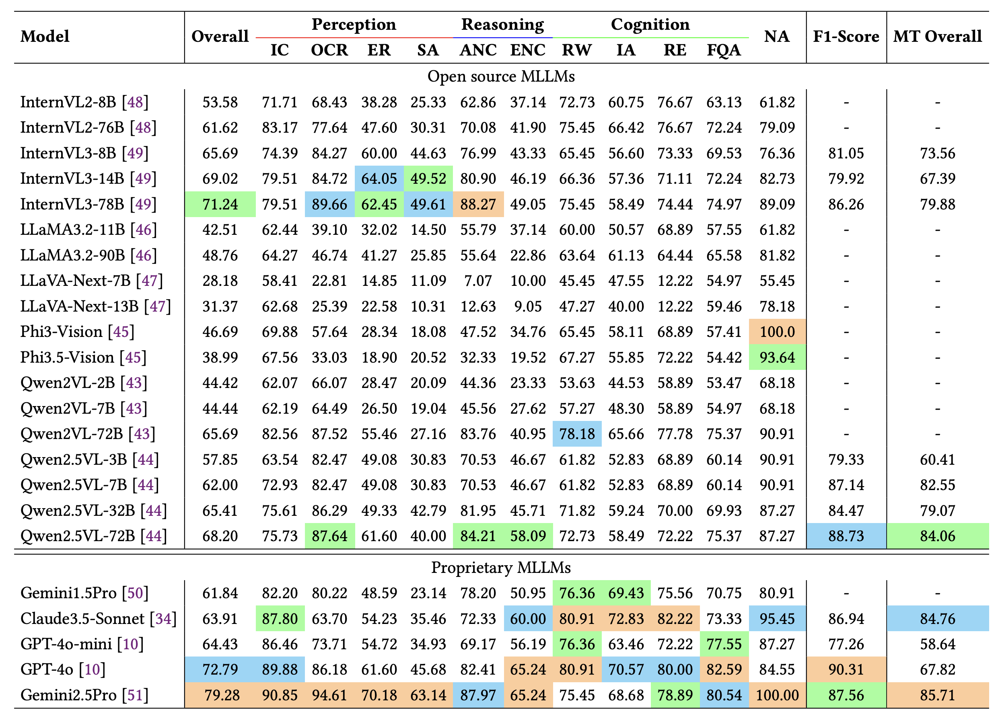

MME-Finance:
MME-Finance:
A Multimodal Finance Benchmark for Expert-level Understanding and Reasoning
Abstract
To date, there is a notable lack of rigorous benchmarks that assess Multimodal Large Language Models (MLLMs) within the financial domain，a field characterized by specialized financial charts and complex domain-specific expertise. To address this gap, we introduce MME-Finance, the first comprehensive bilingual multimodal benchmark tailored for financial analysis. MME-Finance comprises 4,751 meticulously curated samples, encompassing 2,274 open-ended questions, 2,000 binary-choice questions, and 477 multi-turn questions. To mitigate bias when LLMs act as judges, we also created an evaluation framework that strengthens alignment with human judgments by embedding visual context into the multimodal assessment pipeline. A comprehensive evaluation of 31 popular MLLMs has been conducted to assess their perception, reasoning, and cognitive capabilities. Gemini2.5Pro achieves highest accuracy of 79.28\% and 85.71\% on the open-ended questions and multi-turn questions, respectively. Among open-source models, InternVL3-78B attains 71.24 \% accuracy on the open-ended question, whereas Qwen2.5-VL-72B achieves an F1 score of 88.73 \% on the binary-choice question. The results indicate that state-of-the-art MLLMs demonstrate considerable overall competence, yet exhibit significant deficiencies in fine-grained visual perception and the understanding of domain-specific financial images.
Overview
•Data Collection
This is the data collection pipeline of MME-Finance. First, we identify relevant financial pages on a computer and use screenshot tools to capture the appropriate areas. Then, we use mobile devices to photograph the corresponding sections. Next, we search for the same content on mobile applications and capture screenshots using smartphones. The inclusion of diverse image styles, including computer screenshots, mobile photographs, and vertical and horizontal mobile screenshots, is intended to simulate real-world application scenarios. MME-Finance categorizes the collected images into six types: candlestick charts, technical indicator charts, statistical charts, tables, documents, and mixed charts.

•QA Generation
This is the annotation pipeline on MME-Finance. GPT-4o is utilized to generate questions and corresponding answers. These results are reviewd by experts to make sure the quality of MME-Finance.
•Evaluation Method
This is the evaluation pipeline on MME-Finance. MME-Finance designs a comprehensive evaluation process tailored to the characteristics of our benchmark. During the inference phase, prompts are crafted to constrain the output formats of MLLMs, thereby facilitating a more standardized evaluation. LLM-based evaluation system is used to score the performance of various models. The scoring system is divided into six levels, ranging from 0 (completely incorrect) to 5 (fully correct), with the overall score being the average across all samples.

•Statistics
This is the statistics results of open-ended version of MME-Finance. MME-Finance contains 1,171 English and 1,103 Chinese image-question-answer pairs spanning 11 distinct tasks, categorized into 3 ability levels. In addition, MME-Finance incorporates questions aimed at evaluating hallucinations of MLLMs. The number of samples per task varies from 42 to 395, with the "Spatial Awareness" task containing the most and "Reason Explanation" the fewest. The above image illustrates the distribution of the 6 image types, where statistical charts account for the main proportion, while mixed charts are the least. The below image displays the distribution of 4 image styles. Computer screenshots and mobile photographs constitute similar proportions, representing 42.9% and 40.5% of the total, respectively. Horizontal mobile screenshots contain fewest samples. Vertical and horizontal mobile screenshots contain approximately sample sizes.

Results on MME-Finance
The below table shows the results of various MLLMs on English open-ended version, binary-choice version, and multi-turn version of MME-Finance. For the open-ended version, performance across the MLLMs varies significantly, with many models exhibiting low accuracy, highlighting the challenging nature of the MME-Finance. Among all the evaluated models, Gemini2.5Pro achieves the best overall performance with 79.28% accuracy, excelling in most tasks, particularly OCR and SA. GPT-4o and InternVL3-78B rank second and third, respectively. Furthermore, the experimental results support the observation of MMBench that the size of the language model has a significant impact on performance. For the binary-choice version of MME-Finance, the results of all the models are quite good. GPT-4o, Qwen2.5VL-72B, and Gemini2.5Pro achieve the top three results. For the multi-turn version, Gemini2.5Pro is the best, followed by Claude3.5-sonnet, and then Qwen2.5VL-72B. Overall, for the MME-Finance, the proprietary models demonstrated superior performance. Nevertheless, the leading open-source model exhibited only a marginal difference in effectiveness.
Demonstrations
•Open-ended version
•Binary-choice version
•Multi-turn version
Citation
@article{gan2024woodpecker,
title={MME-Finance: A Multimodal Finance Benchmark for Expert-level Understanding and Reasoning},
author={Gan, Ziliang and Lu, Yu and Zang, Dong and Li, Haohan and Liu, Che and Liu, Jian and Liu, Ji and Wu, Haipang and Fu, Chaoyou and Xu, Zenglin and Zhang, Rongjunchen and Dai, Yong},
journal={arXiv preprint arXiv:2411.03314},
year={2024}
}